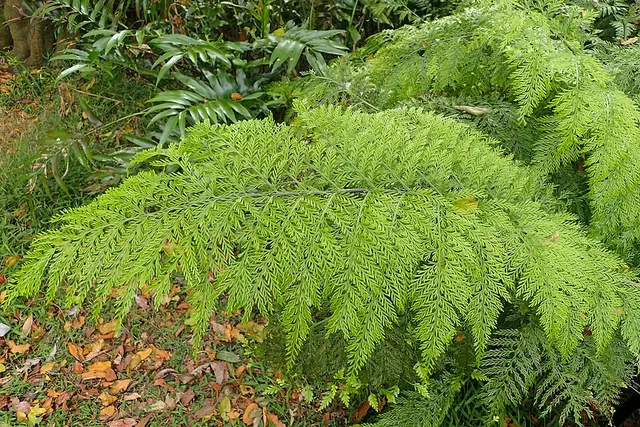

Pikopiko
Pikopiko is a wild green you can forage from August to November across New Zealand. Young curled fronds of the hen and chickens fern in shady bush; tastes like asparagus and spinach.

When is pikopiko in season in New Zealand?
Pikopiko is usually in season August to November. Timing shifts with weather, latitude and altitude.
Where does pikopiko grow in New Zealand?
Pikopiko grows across New Zealand. Regions: Northland and Auckland, Central North Island, East Coast and Hawke's Bay, Wellington and Manawatū, Top of the South, West Coast, Canterbury, Otago and Southland.
How do you recognise pikopiko?
Young curled fronds of the hen and chickens fern in shady bush; tastes like asparagus and spinach.
How do you harvest pikopiko?
Pick a few unfurled fronds per plant, only of the right fern, as shown by someone experienced.
How do you eat pikopiko?
Blanched and sautéed in butter.
How do you store pikopiko?
Blanch and freeze.
What is pikopiko good for?
Vitamin A.
What can you cook with pikopiko?
- Pikopiko in butter: Blanched fern fronds sautéed with butter and garlic.